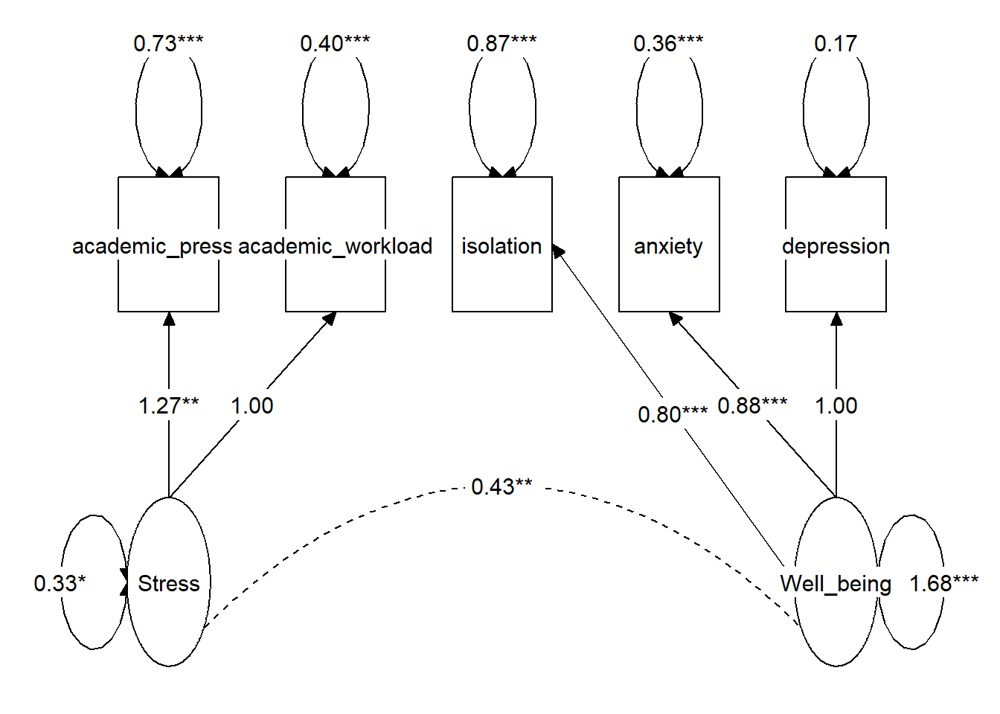
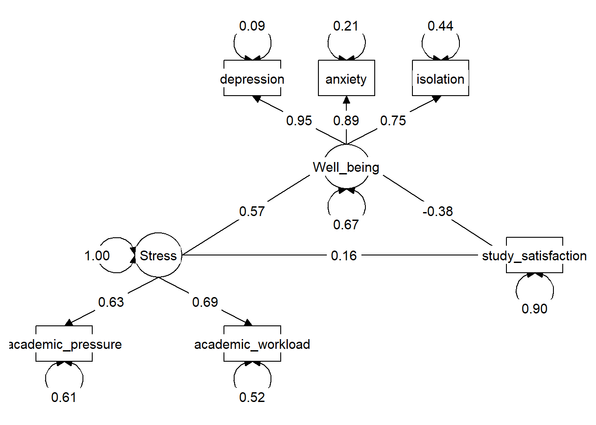
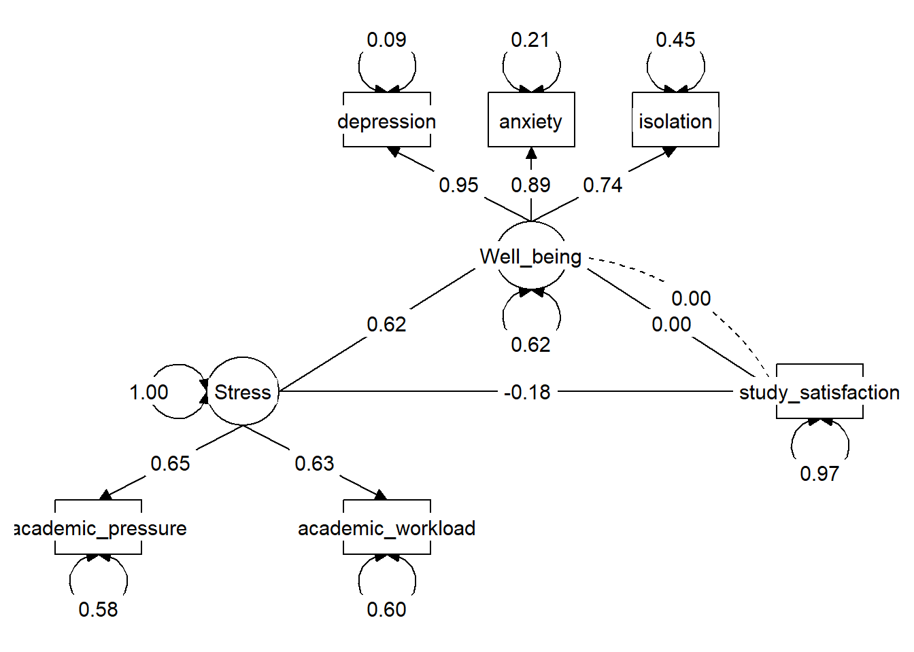
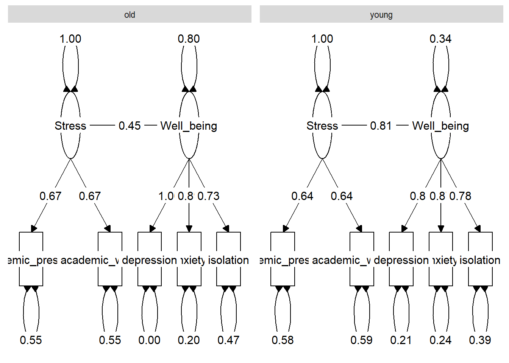

library(tidyverse)
library(lavaan)
library(ggfortify)
library(tidySEM)SEM Course - Final Project
Setup
Data loading and wrangling
data <- read.csv("../final/MentalHealthSurvey.csv")
data_clean <- data |>
select(where(is.numeric))We create two latent variables: * (reversed) Well_being from depression, anxiety and isolation. * Stress from academic_workload and academic_pressure.
Measurement model
meaurement_model <- '
## latent variable definitions (CFA)
Stress =~ academic_workload + academic_pressure
Well_being =~ depression + anxiety + isolation
## Covariances
Well_being ~~ Stress
## Regressions
## errors
## autocorrelations
## self-regression (do not forget!)
'Model fitting and output
fit_meas <- cfa(meaurement_model, data = data_clean)
summary(fit_meas, fit.measures = TRUE, standardize = F)lavaan 0.6-18 ended normally after 29 iterations
Estimator ML
Optimization method NLMINB
Number of model parameters 11
Number of observations 87
Model Test User Model:
Test statistic 7.470
Degrees of freedom 4
P-value (Chi-square) 0.113
Model Test Baseline Model:
Test statistic 216.524
Degrees of freedom 10
P-value 0.000
User Model versus Baseline Model:
Comparative Fit Index (CFI) 0.983
Tucker-Lewis Index (TLI) 0.958
Loglikelihood and Information Criteria:
Loglikelihood user model (H0) -586.346
Loglikelihood unrestricted model (H1) -582.612
Akaike (AIC) 1194.693
Bayesian (BIC) 1221.818
Sample-size adjusted Bayesian (SABIC) 1187.109
Root Mean Square Error of Approximation:
RMSEA 0.100
90 Percent confidence interval - lower 0.000
90 Percent confidence interval - upper 0.210
P-value H_0: RMSEA <= 0.050 0.189
P-value H_0: RMSEA >= 0.080 0.687
Standardized Root Mean Square Residual:
SRMR 0.041
Parameter Estimates:
Standard errors Standard
Information Expected
Information saturated (h1) model Structured
Latent Variables:
Estimate Std.Err z-value P(>|z|)
Stress =~
academic_wrkld 1.000
academic_prssr 1.266 0.392 3.226 0.001
Well_being =~
depression 1.000
anxiety 0.882 0.074 11.909 0.000
isolation 0.801 0.091 8.818 0.000
Covariances:
Estimate Std.Err z-value P(>|z|)
Stress ~~
Well_being 0.428 0.131 3.270 0.001
Variances:
Estimate Std.Err z-value P(>|z|)
.academic_wrkld 0.397 0.113 3.527 0.000
.academic_prssr 0.730 0.188 3.875 0.000
.depression 0.165 0.097 1.703 0.089
.anxiety 0.355 0.091 3.905 0.000
.isolation 0.874 0.147 5.944 0.000
Stress 0.325 0.132 2.464 0.014
Well_being 1.684 0.294 5.718 0.000Factors constructing both latent variables show significant loadings, indicating that they contribute to the measurement of them. As can be expected, positive and significant correlation between the two latent variables.
Goodness of fit
fitMeasures(fit_meas, output = "text",
fit.measures = c("nfi","nnfi","tli","cfi","gfi","rmsea"))
User Model versus Baseline Model:
Comparative Fit Index (CFI) 0.983
Tucker-Lewis Index (TLI) 0.958
Bentler-Bonett Non-normed Fit Index (NNFI) 0.958
Bentler-Bonett Normed Fit Index (NFI) 0.966
Root Mean Square Error of Approximation:
RMSEA 0.100
Other Fit Indices:
Goodness of Fit Index (GFI) 0.969
Model seems to fit the data well.
Comparing the measurement model to the saturated (just identified) model:
anova(fit_meas)Chi-Squared Test Statistic (unscaled)
Df AIC BIC Chisq Chisq diff Df diff Pr(>Chisq)
Saturated 0 0.0000
Model 4 1194.7 1221.8 7.4697 7.4697 4 0.1131Measurement model does not fit significantly better to the data than the saturated model.
Using modificationindices() to see what changes to the model could improve it’s fit:
modificationindices(fit_meas, sort. = TRUE, maximum.number = 5) lhs op rhs mi epc sepc.lv sepc.all sepc.nox
22 academic_workload ~~ isolation 5.487 -0.182 -0.182 -0.309 -0.309
26 depression ~~ anxiety 3.300 -0.550 -0.550 -2.272 -2.272
16 Stress =~ isolation 3.300 -0.586 -0.334 -0.239 -0.239
21 academic_workload ~~ anxiety 1.478 0.068 0.068 0.180 0.180
24 academic_pressure ~~ anxiety 1.131 -0.078 -0.078 -0.153 -0.153It seems that estimating the covariance between academic_workload and isolation, and between depression and anxiety, as well as adding isolation to the measurement of Stress will improve model fit.
Reliability of each latent variable measurement:
semTools::reliability(fit_meas) Stress Well_being
alpha 0.5887577 0.8948641
omega 0.5969714 0.8968005
omega2 0.5969714 0.8968005
omega3 0.5969714 0.8941059
avevar 0.4288314 0.7449595Visualization
Measurement of Well_being is more reliable than the measurement of Stress.
lay <- get_layout(
"academic_pressure", "academic_workload", "isolation", "anxiety", "depression",
"Stress", NA, NA, NA, "Well_being",
rows = 2
)graph_sem(fit_meas, angle = 90, layout = lay)
Hypothesis 1 - Mediation
Hypothesis 1 - A mediation model: Stress predicts bad well being, which in turn predict lower study satisfaction.
Hypothesized model
hypothesized_model <- '
## latent variable definitions (CFA)
Stress =~ academic_workload + academic_pressure
Well_being =~ depression + anxiety + isolation
## Covariances
## Regressions
Well_being ~ Stress
study_satisfaction ~ Stress + Well_being
## effects
## autocorrelations
## self-regression (do not forget!)
'hypothesized_fit <- sem(hypothesized_model, data = data_clean)summary(hypothesized_fit)lavaan 0.6-18 ended normally after 32 iterations
Estimator ML
Optimization method NLMINB
Number of model parameters 14
Number of observations 87
Model Test User Model:
Test statistic 9.751
Degrees of freedom 7
P-value (Chi-square) 0.203
Parameter Estimates:
Standard errors Standard
Information Expected
Information saturated (h1) model Structured
Latent Variables:
Estimate Std.Err z-value P(>|z|)
Stress =~
academic_wrkld 1.000
academic_prssr 1.189 0.366 3.245 0.001
Well_being =~
depression 1.000
anxiety 0.887 0.073 12.102 0.000
isolation 0.806 0.090 8.915 0.000
Regressions:
Estimate Std.Err z-value P(>|z|)
Well_being ~
Stress 1.264 0.394 3.210 0.001
study_satisfaction ~
Stress 0.288 0.324 0.889 0.374
Well_being -0.301 0.123 -2.451 0.014
Variances:
Estimate Std.Err z-value P(>|z|)
.academic_wrkld 0.376 0.115 3.259 0.001
.academic_prssr 0.762 0.183 4.163 0.000
.depression 0.176 0.093 1.881 0.060
.anxiety 0.349 0.089 3.944 0.000
.isolation 0.865 0.146 5.939 0.000
.study_satsfctn 0.971 0.152 6.403 0.000
Stress 0.346 0.137 2.524 0.012
.Well_being 1.120 0.262 4.272 0.000Direct path - Stress is not significantly correlated with study satisfaction when controlling for well being.
Indirect path - Well being is significantly correlated with Stress, and it is also significantly correlated with study satisfaction.
Goodness of fit
fitMeasures(hypothesized_fit, output = "text",
fit.measures = c("nfi","nnfi","tli","cfi","gfi","rmsea"))
User Model versus Baseline Model:
Comparative Fit Index (CFI) 0.987
Tucker-Lewis Index (TLI) 0.972
Bentler-Bonett Non-normed Fit Index (NNFI) 0.972
Bentler-Bonett Normed Fit Index (NFI) 0.957
Root Mean Square Error of Approximation:
RMSEA 0.067
Other Fit Indices:
Goodness of Fit Index (GFI) 0.964
Good model fit.
anova(hypothesized_fit)Chi-Squared Test Statistic (unscaled)
Df AIC BIC Chisq Chisq diff Df diff Pr(>Chisq)
Saturated 0 0.0000
Model 7 1446.6 1481.1 9.7505 9.7505 7 0.2032The hypothesized model is not a better fit than the saturated model.
Visualiztion
lay <- get_layout(
NA, NA, "depression", "anxiety", "isolation", NA,
NA, NA, NA, "Well_being", NA, NA,
NA, "Stress", NA, NA, NA, "study_satisfaction",
"academic_pressure", NA, "academic_workload", NA, NA, NA,
rows = 4
)graph_sem(hypothesized_fit,
edges = get_edges(hypothesized_fit, label = "est_std"),
angle = 90,
layout = lay)
Fixing the correlation between Well_being and study_satisfaction to 0, nullifying the indirect path.
Restricted model
restricted_hypothesized_model <- '
## latent variable definitions (CFA)
Stress =~ academic_workload + academic_pressure
Well_being =~ depression + anxiety + isolation
## Covariances
Well_being ~~ 0 * study_satisfaction
## Regressions
Well_being ~ Stress
study_satisfaction ~ 0 * Well_being + Stress
## effects
## autocorrelations
## self-regression (do not forget!)
'restricted_hypothesized_fit <- sem(restricted_hypothesized_model, data = data_clean)summary(restricted_hypothesized_fit)lavaan 0.6-18 ended normally after 30 iterations
Estimator ML
Optimization method NLMINB
Number of model parameters 13
Number of observations 87
Model Test User Model:
Test statistic 15.435
Degrees of freedom 8
P-value (Chi-square) 0.051
Parameter Estimates:
Standard errors Standard
Information Expected
Information saturated (h1) model Structured
Latent Variables:
Estimate Std.Err z-value P(>|z|)
Stress =~
academic_wrkld 1.000
academic_prssr 1.343 0.402 3.341 0.001
Well_being =~
depression 1.000
anxiety 0.881 0.074 11.959 0.000
isolation 0.800 0.091 8.839 0.000
Regressions:
Estimate Std.Err z-value P(>|z|)
Well_being ~
Stress 1.490 0.444 3.353 0.001
study_satisfaction ~
Well_being 0.000
Stress -0.346 0.261 -1.327 0.184
Covariances:
Estimate Std.Err z-value P(>|z|)
.Well_being ~~
.study_satsfctn 0.000
Variances:
Estimate Std.Err z-value P(>|z|)
.academic_wrkld 0.433 0.105 4.129 0.000
.academic_prssr 0.729 0.184 3.961 0.000
.depression 0.164 0.096 1.708 0.088
.anxiety 0.357 0.090 3.945 0.000
.isolation 0.874 0.147 5.948 0.000
.study_satsfctn 1.041 0.161 6.484 0.000
Stress 0.289 0.120 2.414 0.016
.Well_being 1.042 0.265 3.927 0.000Goodness of fit
fitMeasures(restricted_hypothesized_fit, output = "text",
fit.measures = c("nfi","nnfi","tli","cfi","gfi","rmsea"))
User Model versus Baseline Model:
Comparative Fit Index (CFI) 0.965
Tucker-Lewis Index (TLI) 0.934
Bentler-Bonett Non-normed Fit Index (NNFI) 0.934
Bentler-Bonett Normed Fit Index (NFI) 0.932
Root Mean Square Error of Approximation:
RMSEA 0.103
Other Fit Indices:
Goodness of Fit Index (GFI) 0.943
Comparing between the hypothesized model and the restricted model.
anova(restricted_hypothesized_fit, hypothesized_fit)
Chi-Squared Difference Test
Df AIC BIC Chisq Chisq diff RMSEA Df diff
hypothesized_fit 7 1446.6 1481.1 9.7505
restricted_hypothesized_fit 8 1450.3 1482.3 15.4352 5.6847 0.23205 1
Pr(>Chisq)
hypothesized_fit
restricted_hypothesized_fit 0.01711 *
---
Signif. codes: 0 '***' 0.001 '**' 0.01 '*' 0.05 '.' 0.1 ' ' 1Visualiztion
The restricted model is a significantly better fit. The simpler model, without the indirect path is better.
graph_sem(restricted_hypothesized_fit,
edges = get_edges(restricted_hypothesized_fit, label = "est_std"),
angle = 90,
layout = lay)
Hypothesis 2 - Group analysis (interaction)
Do older students deal better with stress, do the correlation between Stress and Well_being differ for different ages?
Creating a categorical variable for age because lavaan doesn’t support interaction terms for latent variables.
data_clean <- data_clean |>
mutate(age_cat = case_when(age < median(age) ~ "young",
age >= median(age) ~ "old",
.default = NA))Model fitting
interaction_hypothesized_model <- '
## latent variable definitions (CFA)
Stress =~ academic_workload + academic_pressure
Well_being =~ depression + anxiety + isolation
## Covariances
## Regressions
Well_being ~ Stress
## effects
## autocorrelations
## self-regression (do not forget!)
'interaction_hypothesized_fit <- sem(interaction_hypothesized_model, data = data_clean,
group = "age_cat")summary(interaction_hypothesized_fit)lavaan 0.6-18 ended normally after 52 iterations
Estimator ML
Optimization method NLMINB
Number of model parameters 32
Number of observations per group:
old 53
young 34
Model Test User Model:
Test statistic 8.946
Degrees of freedom 8
P-value (Chi-square) 0.347
Test statistic for each group:
old 6.454
young 2.492
Parameter Estimates:
Standard errors Standard
Information Expected
Information saturated (h1) model Structured
Group 1 [old]:
Latent Variables:
Estimate Std.Err z-value P(>|z|)
Stress =~
academic_wrkld 1.000
academic_prssr 1.331 0.639 2.085 0.037
Well_being =~
depression 1.000
anxiety 0.852 0.079 10.850 0.000
isolation 0.772 0.109 7.059 0.000
Regressions:
Estimate Std.Err z-value P(>|z|)
Well_being ~
Stress 1.070 0.500 2.138 0.033
Intercepts:
Estimate Std.Err z-value P(>|z|)
.academic_wrkld 3.943 0.118 33.540 0.000
.academic_prssr 3.774 0.157 24.028 0.000
.depression 3.245 0.189 17.216 0.000
.anxiety 3.302 0.180 18.328 0.000
.isolation 3.226 0.199 16.210 0.000
Variances:
Estimate Std.Err z-value P(>|z|)
.academic_wrkld 0.402 0.171 2.350 0.019
.academic_prssr 0.721 0.304 2.373 0.018
.depression 0.000 0.114 0.001 0.999
.anxiety 0.352 0.107 3.283 0.001
.isolation 0.977 0.202 4.848 0.000
Stress 0.331 0.193 1.711 0.087
.Well_being 1.505 0.359 4.195 0.000
Group 2 [young]:
Latent Variables:
Estimate Std.Err z-value P(>|z|)
Stress =~
academic_wrkld 1.000
academic_prssr 1.308 0.494 2.646 0.008
Well_being =~
depression 1.000
anxiety 0.913 0.146 6.269 0.000
isolation 0.862 0.159 5.426 0.000
Regressions:
Estimate Std.Err z-value P(>|z|)
Well_being ~
Stress 1.814 0.723 2.510 0.012
Intercepts:
Estimate Std.Err z-value P(>|z|)
.academic_wrkld 3.794 0.143 26.577 0.000
.academic_prssr 3.794 0.185 20.510 0.000
.depression 3.176 0.230 13.835 0.000
.anxiety 3.088 0.214 14.459 0.000
.isolation 3.265 0.225 14.498 0.000
Variances:
Estimate Std.Err z-value P(>|z|)
.academic_wrkld 0.411 0.139 2.948 0.003
.academic_prssr 0.680 0.234 2.901 0.004
.depression 0.384 0.171 2.245 0.025
.anxiety 0.376 0.151 2.491 0.013
.isolation 0.677 0.201 3.369 0.001
Stress 0.282 0.167 1.693 0.090
.Well_being 0.479 0.368 1.303 0.193Goodness of fit
fitMeasures(interaction_hypothesized_fit, output = "text",
fit.measures = c("nfi","nnfi","tli","cfi","gfi","rmsea"))
User Model versus Baseline Model:
Comparative Fit Index (CFI) 0.995
Tucker-Lewis Index (TLI) 0.989
Bentler-Bonett Non-normed Fit Index (NNFI) 0.989
Bentler-Bonett Normed Fit Index (NFI) 0.961
Root Mean Square Error of Approximation:
RMSEA 0.052
Other Fit Indices:
Goodness of Fit Index (GFI) 0.996
Very good fit.
Comparing to the saturated model:
anova(interaction_hypothesized_fit)Chi-Squared Test Statistic (unscaled)
Df AIC BIC Chisq Chisq diff Df diff Pr(>Chisq)
Saturated 0 0.0000
Model 8 1223.1 1302 8.9457 8.9457 8 0.3469Visualiztion
The model is not significantly better than the saturated model.
lay <- get_layout(NA, "Stress", NA, NA, "Well_being", NA,
"academic_pressure", NA, "academic_workload", "depression", "anxiety", "isolation",
rows = 2)graph_sem(interaction_hypothesized_fit,
edges = get_edges(interaction_hypothesized_fit, label = "est_std"),
nodes = get_nodes(interaction_hypothesized_fit, label = "name"),
layout = lay,
angle = 90)
As hypothesized, correlation between Stress and Well_being is stronger among young students. Is it significant?
Comparison of parameters
interaction_hypothesized_model_comp <- '
## latent variable definitions (CFA)
Stress =~ academic_workload + academic_pressure
Well_being =~ depression + anxiety + isolation
## Covariances
## Regressions
Well_being ~ c(Oeffect, Yeffect) * Stress
## Computed estimates
gender_effect_diff := Oeffect - Yeffect
## effects
## autocorrelations
## self-regression (do not forget!)
'interaction_hypothesized_fit <- sem(interaction_hypothesized_model_comp, data = data_clean,
group = "age_cat")summary(interaction_hypothesized_fit)lavaan 0.6-18 ended normally after 52 iterations
Estimator ML
Optimization method NLMINB
Number of model parameters 32
Number of observations per group:
old 53
young 34
Model Test User Model:
Test statistic 8.946
Degrees of freedom 8
P-value (Chi-square) 0.347
Test statistic for each group:
old 6.454
young 2.492
Parameter Estimates:
Standard errors Standard
Information Expected
Information saturated (h1) model Structured
Group 1 [old]:
Latent Variables:
Estimate Std.Err z-value P(>|z|)
Stress =~
academic_wrkld 1.000
academic_prssr 1.331 0.639 2.085 0.037
Well_being =~
depression 1.000
anxiety 0.852 0.079 10.850 0.000
isolation 0.772 0.109 7.059 0.000
Regressions:
Estimate Std.Err z-value P(>|z|)
Well_being ~
Stress (Offc) 1.070 0.500 2.138 0.033
Intercepts:
Estimate Std.Err z-value P(>|z|)
.academic_wrkld 3.943 0.118 33.540 0.000
.academic_prssr 3.774 0.157 24.028 0.000
.depression 3.245 0.189 17.216 0.000
.anxiety 3.302 0.180 18.328 0.000
.isolation 3.226 0.199 16.210 0.000
Variances:
Estimate Std.Err z-value P(>|z|)
.academic_wrkld 0.402 0.171 2.350 0.019
.academic_prssr 0.721 0.304 2.373 0.018
.depression 0.000 0.114 0.001 0.999
.anxiety 0.352 0.107 3.283 0.001
.isolation 0.977 0.202 4.848 0.000
Stress 0.331 0.193 1.711 0.087
.Well_being 1.505 0.359 4.195 0.000
Group 2 [young]:
Latent Variables:
Estimate Std.Err z-value P(>|z|)
Stress =~
academic_wrkld 1.000
academic_prssr 1.308 0.494 2.646 0.008
Well_being =~
depression 1.000
anxiety 0.913 0.146 6.269 0.000
isolation 0.862 0.159 5.426 0.000
Regressions:
Estimate Std.Err z-value P(>|z|)
Well_being ~
Stress (Yffc) 1.814 0.723 2.510 0.012
Intercepts:
Estimate Std.Err z-value P(>|z|)
.academic_wrkld 3.794 0.143 26.577 0.000
.academic_prssr 3.794 0.185 20.510 0.000
.depression 3.176 0.230 13.835 0.000
.anxiety 3.088 0.214 14.459 0.000
.isolation 3.265 0.225 14.498 0.000
Variances:
Estimate Std.Err z-value P(>|z|)
.academic_wrkld 0.411 0.139 2.948 0.003
.academic_prssr 0.680 0.234 2.901 0.004
.depression 0.384 0.171 2.245 0.025
.anxiety 0.376 0.151 2.491 0.013
.isolation 0.677 0.201 3.369 0.001
Stress 0.282 0.167 1.693 0.090
.Well_being 0.479 0.368 1.303 0.193
Defined Parameters:
Estimate Std.Err z-value P(>|z|)
gendr_ffct_dff -0.745 0.879 -0.847 0.397Estimated parameters for young students (\(b=1.814\)) and old students (\(b=1.07\)) does not differ significantly (\(d=-0.745\), \(p=0.397\)).